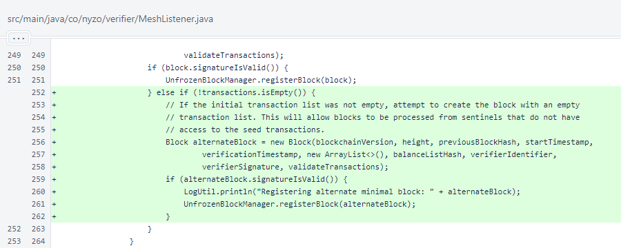
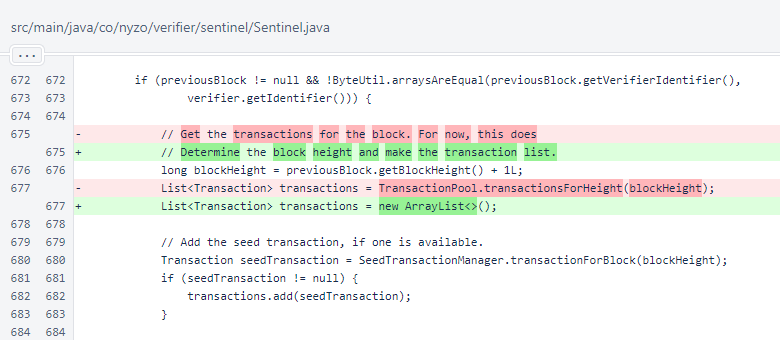

Nyzo version 589 (commit on GitHub) adds creation of an alternate minimal block to improve verifier entrance.
This version involves code running on the verifier. It also contains an inconsequential change to the sentinel.
This is not a critical update. It will improve behavior of the system, but the behavior improvements will be realized when a small number of verifiers have updated. Updating to this version is unnecessary if you do not find it interesting.
In MeshListener.processMinimalBlockMessage(), an alternate block is now made without the seed transaction.
In Sentinel.createNextBlock(), the call to TransactionPool.transactionsForHeight() was replaced with creation of an empty list. This does not change behavior, because the list provided by TransactionPool was always empty. When the sentinel was first implemented, omission of transactions was planned to be temporary. However, the additional level of safety provided by this omission has been desirable, and there are now no plans to have the sentinel include transactions other than the single seed transaction.
The following lines, in which the seed transaction is added, show why creation of the alternate block in MeshListener is necessary. In some cases, the sentinel might not include a seed transaction. Previously, a minimal block message produced from such a block would not have been processed properly.
